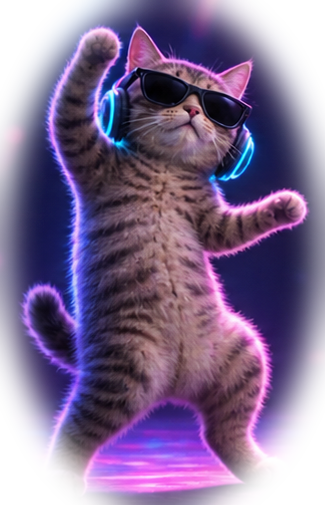
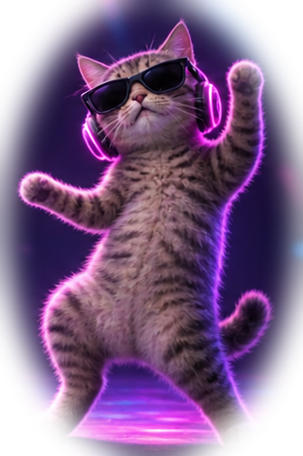

⚡ Chaos Arcade
Weird facts, mini-games, questionable motivation, and tiny side quests.


List has limits, maybe you want to go back to whatever you were doing?
Weird facts, mini-games, questionable motivation, and tiny side quests.